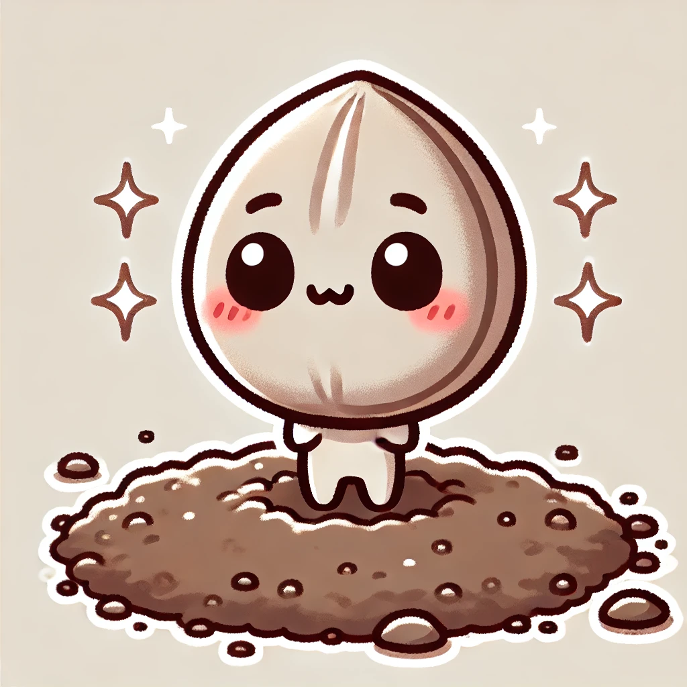
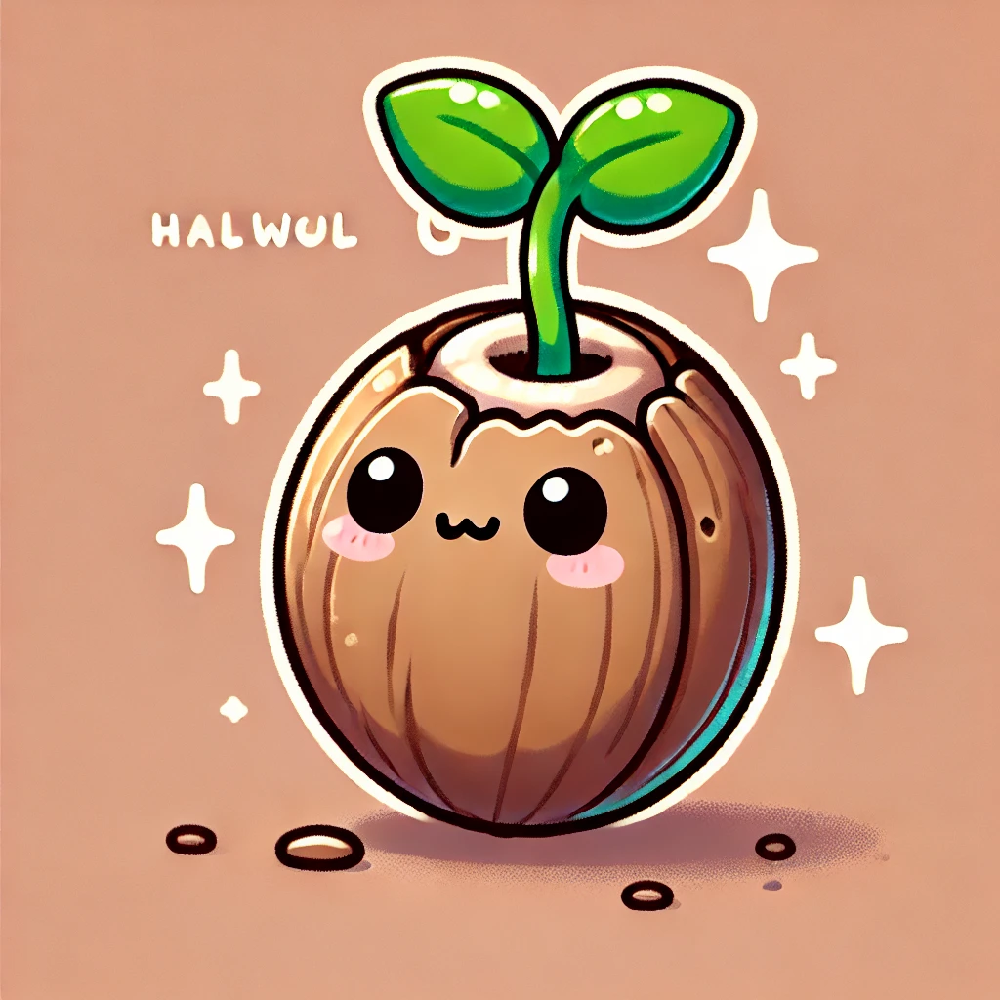
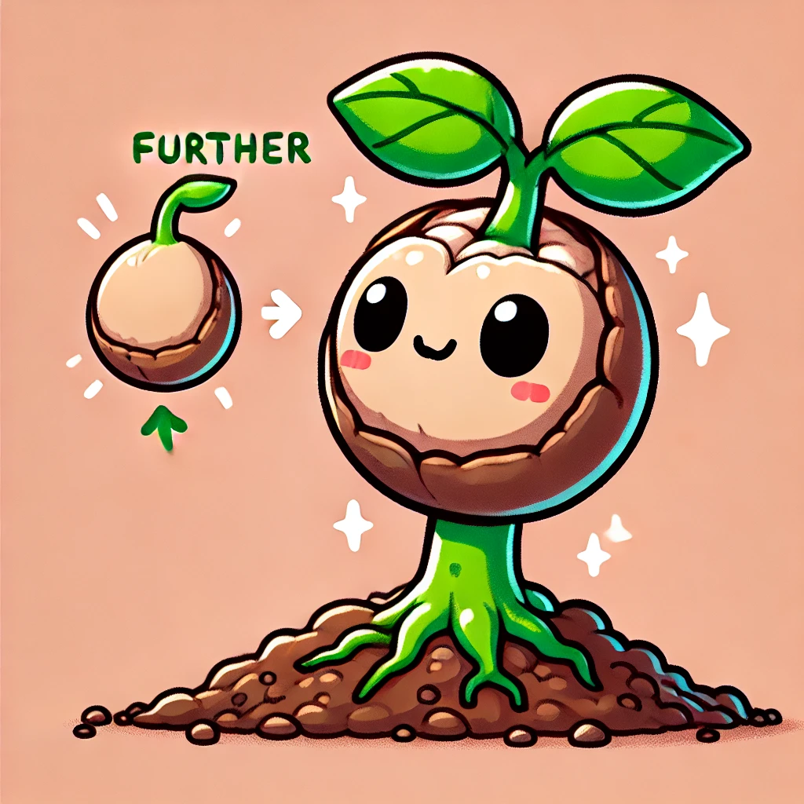
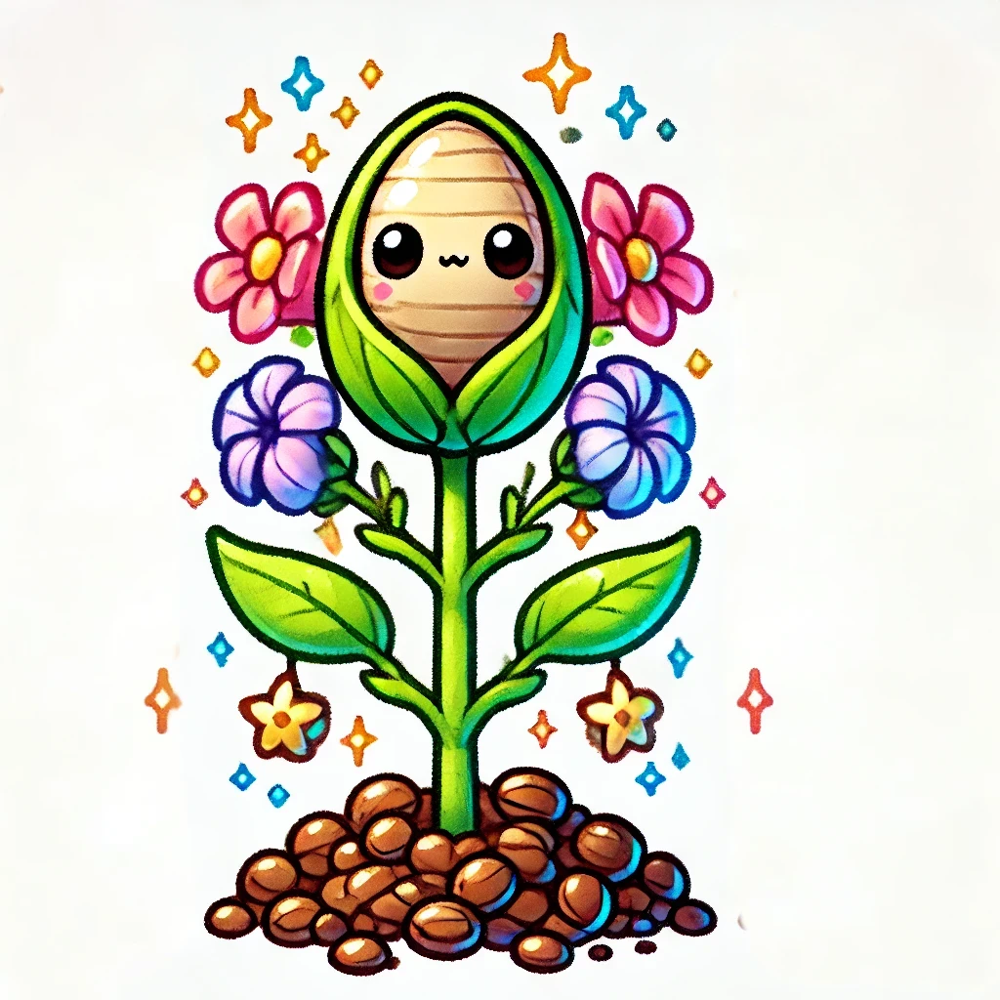

種子有4個階段，每個階段的圖示如下：    
好土：種子成長到4階段可收成30分 自然生長1
荊棘地：種子成長到4階段可收成10分 自然生長1 但無法自然生長到4
土淺石頭地：種子成長到4階段可收成10分 自然生長1 但有20%機率被移除
路旁鳥：種子成長到4階段可收成10分 不會生長
優質好土：種子成長到4階段可收成60分 只能由好土升級 自然生長1
頂級好土：種子成長到4階段可收成100分 只能由優質好土升級 自然生長1